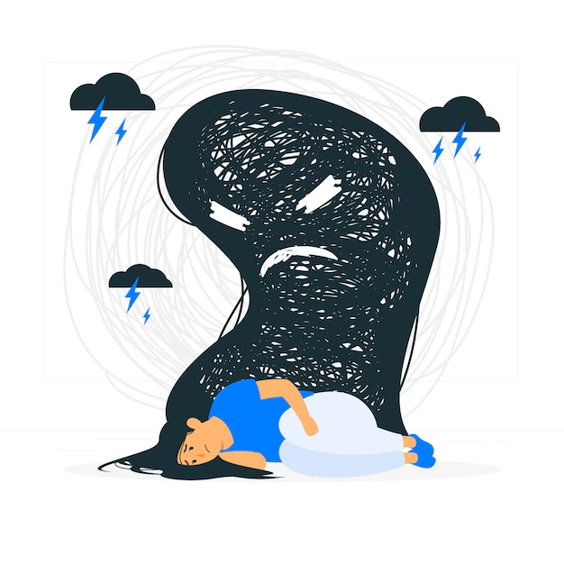

Tratamiento y Manejo de la Esquizofrenia:
El tratamiento y manejo de la esquizofrenia se basan en un enfoque multidisciplinario que involucra a profesionales de la salud mental, medicación, terapia y apoyo social. El objetivo es ayudar a las personas con esquizofrenia a controlar sus síntomas, mejorar su calidad de vida y lograr una integración exitosa en la sociedad. A continuación, se describen los componentes clave del tratamiento y manejo de la esquizofrenia:
Medicación: Los antipsicóticos o neurolépticos son medicamentos fundamentales en el tratamiento de la esquizofrenia. Ayudan a reducir los síntomas positivos, como las alucinaciones y los delirios. Los médicos trabajan para encontrar la dosis y el tipo de medicación adecuados para cada persona. Es importante tomar la medicación de manera regular, ya que interrumpirla sin orientación médica puede desencadenar recaídas. Terapia Psicológica: La terapia es un componente crucial del tratamiento de la esquizofrenia. La terapia cognitivo-conductual (TCC) puede ayudar a las personas a comprender y manejar los síntomas, mejorar la función social y ocupacional, y promover la adhesión al tratamiento. La terapia familiar también puede ser beneficiosa, ya que involucra a la familia en el proceso de recuperación y mejora las relaciones. Rehabilitación Psicosocial: Los programas de rehabilitación psicosocial se centran en mejorar las habilidades sociales, la independencia y la calidad de vida de las personas con esquizofrenia. Estos programas pueden incluir entrenamiento en habilidades sociales, apoyo en la búsqueda de empleo y vivienda, y educación sobre la enfermedad. Apoyo Comunitario: La conexión con una red de apoyo en la comunidad es esencial. Los grupos de apoyo, las organizaciones sin fines de lucro y los servicios de salud mental pueden proporcionar recursos y apoyo emocional tanto para las personas con esquizofrenia como para sus familias. Educación y Concienciación: La educación sobre la enfermedad es fundamental para las personas con esquizofrenia y sus familias. Comprender los síntomas, el tratamiento y las estrategias de manejo puede ayudar a enfrentar los desafíos de manera efectiva. Prevención de Recaídas: Mantener la adherencia al tratamiento y estar atento a los signos tempranos de recaída es esencial. Los cambios en la medicación o en la terapia pueden ser necesarios en caso de recaída. Estilo de Vida Saludable: Mantener un estilo de vida saludable, que incluye una dieta equilibrada, ejercicio regular y gestión del estrés, puede ser beneficioso para el bienestar general de las personas con esquizofrenia. Supervisión Médica Continua: El seguimiento médico regular es importante para evaluar la eficacia de la medicación, controlar los efectos secundarios y realizar ajustes según sea necesario. Cada persona con esquizofrenia es única, por lo que el tratamiento y el manejo deben adaptarse a sus necesidades individuales. Es importante contar con un equipo de atención médica calificado y una red de apoyo para brindar el mejor cuidado posible. Con el tratamiento adecuado y el apoyo adecuado, muchas personas con esquizofrenia pueden llevar vidas productivas y satisfactorias.